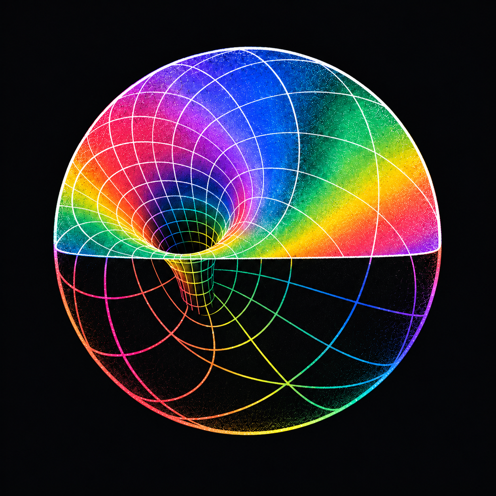
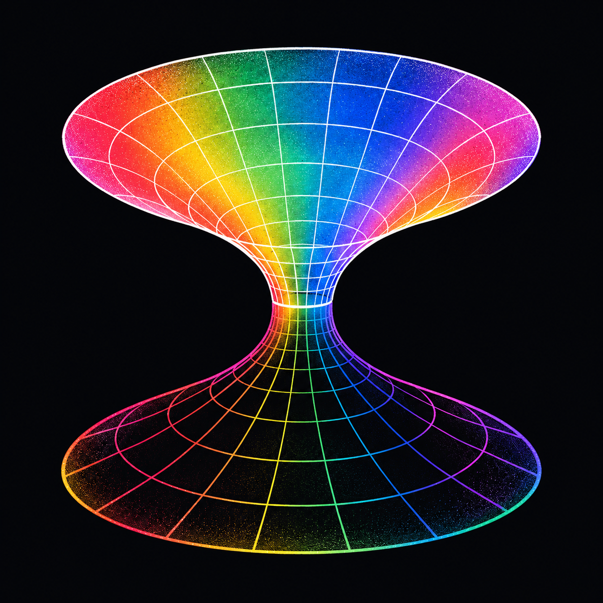

AETHER / CURVED SURFACE & THROAT / 07
曲面下陷，收成喉道。
以网格曲面的弯曲、下陷和收颈表现内吸。
保留频谱色面／白线与黑面／彩线，让不同区域属于同一个连续曲面。

球面内陷／漏斗井
原图 ↙保留球体整体，局部网格向内部沉降，形成有碗壁与收颈的漏斗井。

连续喉道／双口结构
原图 ↙展开连续双口曲面，上方彩面白线、下方黑面彩线；以窄喉连接两端。
AETHER / CURVED SURFACE & THROAT / 07
以网格曲面的弯曲、下陷和收颈表现内吸。
保留频谱色面／白线与黑面／彩线，让不同区域属于同一个连续曲面。

保留球体整体，局部网格向内部沉降，形成有碗壁与收颈的漏斗井。

展开连续双口曲面，上方彩面白线、下方黑面彩线；以窄喉连接两端。